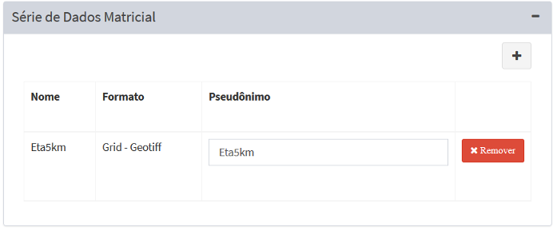
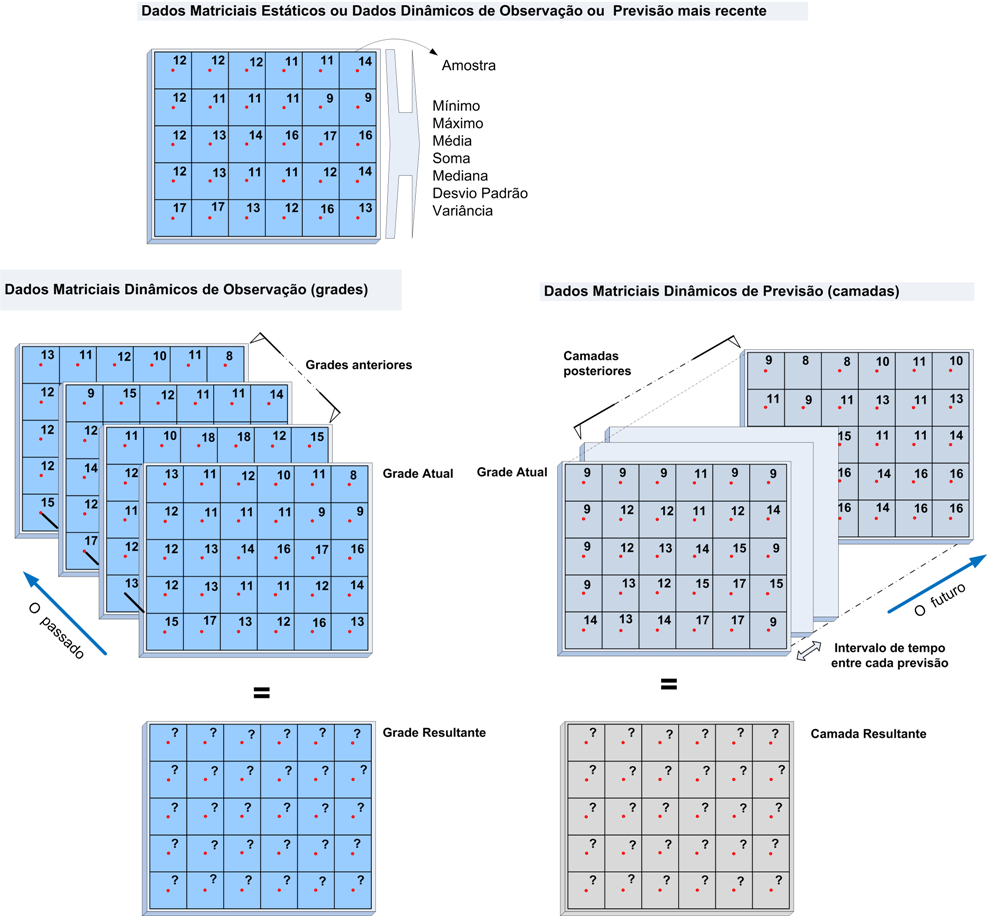
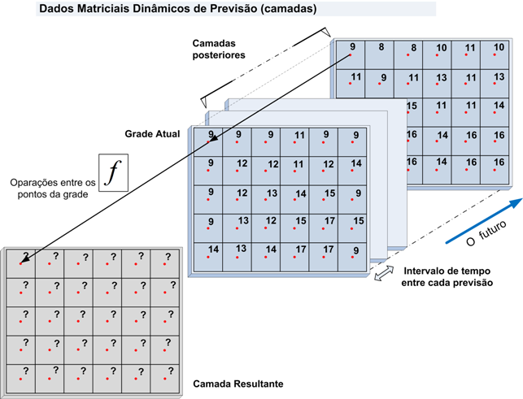

Operadores sobre Grades
Lista de Operadores sobre Grades 
Os operadores espaciais disponíveis para serem utilizados com os dados matriciais são utilizados para dados dinâmicos matriciais de observação ou previsão, assim como para dados estáticos matriciais. A Figura 3.28 mostra que há um grupo de operadores que operam sobre um dado estático matricial ou um conjunto de dados matriciais dinâmicos para a grades de observação ou camadas de previsões mais recente, um grupo de operadores históricos com dados dinâmicos de observações e outro grupo de operadores sobre dados dinâmicos de previsão.

Figura 3.28– Análise com base em dados matriciais: Operações sobre grades/camadas estáticas ou dinâmicas.

Estes utilitários são os mesmos apresentados na análise baseada em objeto monitorado, portanto, maiores detalhes veja o item correspondente.
I.1- Unidade de distância
Para operadores que utilizam unidades de distância devem usar as letras entre aspas duplas ( “<unidade>” ). As seguintes opções estão disponíveis:
- “cm”: centímetros
- “m” : metros
- “km”: quilômetros
I.2- Unidade de tempo
Para operadores que utilizam unidades de tempo devem usar as letras imediatamente após o valor numérico (sem espaço entre o número e a letra), ambos entre aspas dupla ( “<num><unidade>” ). As seguintes opções estão disponíveis:
- sec: segundo
- min: minuto
- h: hora
- d: dia
- w: semana
I.3- Utilitário “ Get analysis date”
- get_analysis_date() : retorna a data/hora de execução da análise, podendo ser um reprocessamento de dado histórico ou valor atual.
Lista de Operadores sobre Grades
Operador matriz atual é utilizado para obter os valores dos “pixels” de uma dado matricial, dinâmico ou estático.
II.1- Amostra
Retorna os valores da grade mais recente em relação a hora atual no caso de uma série de dados históricos de observação ou da camada mais recente de previsão. Para dados matriciais estático retorna os valores da grade própria grade.
SINTAXE GERAL:
grid.sample("<dynamic_data_grid>", [<band>])
onde:
- dynamic_data_grid : String com o nome da série de dados dinâmicos matriciais ou dados estáticos matriciais.
- band : [Opcional] Banda da grade utilizada. Se não informado será considerado a primeira banda (0).
Exemplo: x = grid.sample("hidroestimador") # matriz dinâmica
y = grid.sample("declividade") # matriz estática
Lista de Operadores sobre Grades
Operadores Históricos de Observação
Operadores históricos de observação são operadores utilizados para obter estatísticas sobre os pontos da grade, produzindo um novo valor da grade de saída.
A Figura 3.29 ilustra um conjunto de dados matriciais dinâmicos coletados sistematicamente que são utilizados para obter um novo valor em cada ponto da grade a partir de um operador escolhido pelo usuário, como por exemplo calcular o mínimo, máximo, média, etc.

Figura 3.29 – Análise com base em dados matriciais: Uso de operadores sobre grades dinâmicas de observação.
Estes operadores são divididos em dois tipos: Histórico e Histórico por Intervalo. A descrição de cada tipo a seguir.
III.1- Histórico
Grupo de operadores que retornam valores em cada ponto da grade sobre dados matriciais históricos no intervalo de tempo definido entre a data/hora atual e o valor de tempo informado no passado.
SINTAXE GERAL:
grid.history.<operator>("<dynamic_data_grid>", "<time>", [<band>])
onde:
- operator : min, max, mean, sum, median, standard_deviation, variance;
- dynamic_data_grid : String com o nome da série de dados matriciais .
- time : String com o intervalo de tempo, a partir da hora atual. Ver utilitário Unidades de tempo.
- band : [Opcional] Banda da grade utilizada. Se não informado será considerado a primeira banda (0).
Segue a descrição de cada operador.
Histórico : Mínimo
Retorna os menores valores em cada ponto da grade sobre dados matriciais históricos no intervalo de tempo definido entre a data/hora atual e o valor de tempo informado no passado.
Sintaxe:
grid.history.min(“<dynamic_data_grid>”, “<time>”, [<band>])
Exemplo: x = grid.history.min("chuva", "1d", 0)
Histórico : Máximo
Retorna os maiores valores em cada ponto da grade sobre dados matriciais históricos no intervalo de tempo definido entre a data/hora atual e o valor de tempo informado no passado.
Sintaxe:
grid.history.max(“<dynamic_data_grid>”, “<time>”, [<band>])
Exemplo: x = grid.history.max("chuva", "1d", 0)
Histórico : Média
Retorna as médias dos em cada ponto da grade sobre dados matriciais históricos no intervalo de tempo definido entre a data/hora atual e o valor de tempo informado no passado.
Sintaxe:
grid.history.mean(“<dynamic_data_grid>”, “<time>”, [<band>])
Exemplo: x = grid.history.mean("chuva", "1d", 0)
Histórico : Soma
Retorna as somas em cada ponto da grade sobre dados matriciais históricos no intervalo de tempo definido entre a data/hora atual e o valor de tempo informado no passado.
Sintaxe:
grid.history.sum(“<dynamic_data_grid>”, “<time>”, [<band>])
Exemplo: x = grid.history.sum("chuva", "1d", 0)
Histórico : Mediana
Retorna as medianas em cada ponto da grade sobre dados matriciais históricos no intervalo de tempo definido entre a data/hora atual e o valor de tempo informado no passado.
Sintaxe:
grid.history.median(“<dynamic_data_grid>”, “<time>”, [<band>])
Exemplo: x = grid.history.median("chuva", "1d", 0)
Histórico : Desvio Padrão
Retorna os desvios padrões em cada ponto da grade sobre dados matriciais históricos no intervalo de tempo definido entre a data/hora atual e o valor de tempo informado no passado.
Sintaxe:
grid.history.standard_deviation(“<dynamic_data_grid>”, “<time>”, [<band>])
Exemplo: x = grid.history.standard_deviation("chuva", "1d", 0)
Histórico : Variância
Retorna as variâncias em cada ponto da grade sobre dados matriciais históricos no intervalo de tempo definido entre a data/hora atual e o valor de tempo informado no passado.
Sintaxe:
grid.history.variance(“<dynamic_data_grid>”, “<time>”, [<band>])
Exemplo: x = grid.history.standard_deviation("chuva", "24h", 0)
III.2- Histórico por intervalo
Grupo de operadores que retornam os valores em cada ponto da grade sobre dados matriciais históricos no intervalo de tempo inicial e final informado no passado em relação a data/hora atual.
SINTAXE GERAL:
grid.history.interval.<operator>("<dynamic_data_grid>", "<time_begin>", "<time_end>", [<band>])
onde:
- operator : min, max, mean, median, sum, standard_deviation, variance;
- dynamic_data_grid : String com o nome da série de dados matriciais;
- time_begin : String inicial (mais antigo) do intervalo de tempo para filtrar as grades. Este valor será aberto (< tempo mais antigo) no tempo informado;
- time_end : String final (mais recente) do intervalo de tempo para filtrar as grades. Este valor será fechado ( <= tempo mais recente) no tempo informado;
- band : [Opcional] Banda da grade a ser utilizada. Se não informado será considerado a primeira banda (0);
Segue a descrição de cada operador.
Histórico por intervalo : Mínimo
Retorna os menores valores em cada ponto da grade sobre dados matriciais históricos no intervalo de tempo inicial e final informado no passado em relação a data/hora atual.
Sintaxe:
grid.history.interval.min("<dynamic_data_grid>", "<time_begin>", "<time_end>", [<band>])
Exemplo: x = grid.history.interval.min("chuva", "10d", “5d”, 0)
Histórico por intervalo : Máximo
Retorna os maiores valores em cada ponto da grade sobre dados matriciais históricos no intervalo de tempo inicial e final informado no passado em relação a data/hora atual.
Sintaxe:
grid.history.interval.max("<dynamic_data_grid>", "<time_begin>", "<time_end>", [<band>])
Exemplo: x = grid.history.interval.max("chuva", "10d", “5d”, 0)
Histórico por intervalo : Média
Retorna as médias dos valores em cada ponto da grade sobre dados matriciais históricos no intervalo de tempo inicial e final informado no passado em relação a data/hora atual.
Sintaxe:
grid.history.interval.mean("<dynamic_data_grid>", "<time_begin>", "<time_end>", [<band>])
Exemplo: x = grid.history.interval.mean("chuva", "10d", “5d”, 0)
Histórico por intervalo : Mediana
Retorna as medianas dos valores em cada ponto da grade sobre dados matriciais históricos no intervalo de tempo inicial e final informado no passado em relação a data/hora atual.
Sintaxe:
grid.history.interval.median("<dynamic_data_grid>", "<time_begin>", "<time_end>", [<band>])
Exemplo: x = grid.history.interval.median("chuva", "10d", “5d”, 0)
Histórico por intervalo : Soma
Retorna as somas dos valores em cada ponto da grade sobre dados matriciais históricos no intervalo de tempo inicial e final informado no passado em relação a data/hora atual.
Sintaxe:
grid.history.interval.sum("<dynamic_data_grid>", "<time_begin>", "<time_end>", [<band>])
Exemplo: x = grid.history.interval.sum("chuva", "10d", “5d”, 0)
Histórico por intervalo : Desvio padrão
Retorna os desvios padrões dos valores em cada ponto da grade sobre dados matriciais históricos no intervalo de tempo inicial e final informado no passado em relação a data/hora atual.
Sintaxe:
grid.history.interval.standard_deviation("<dynamic_data_grid>", "<time_begin>", "<time_end>", [<band>])
Exemplo: x = grid.history.interval.standard_deviation("chuva", "10d", “5d”, 0)
Histórico por intervalo : Variância
Retorna as variâncias dos valores em cada ponto da grade sobre dados matriciais históricos no intervalo de tempo inicial e final informado no passado em relação a data/hora atual.
Sintaxe:
grid.history.interval.variance("<dynamic_data_grid>", "<time_begin>", "<time_end>", [<band>])
Exemplo: x = grid.history.interval.variance("chuva", "10d", “5d”, 0)
Lista de Operadores sobre Grades
Operadores de Previsão
Operadores de previsão são operadores utilizados para obter estatísticas sobre os pontos da grade, produzindo um novo valor da grade de saída.
A Figura 3.30 ilustra um conjunto de camadas de um dado matricial dinâmico coletado sistematicamente para serem utilizados para obter um novo valor em cada ponto da grade a partir de um operador escolhido pelo usuário, como por exemplo calcular o mínimo, máximo, média, etc.

Figura 3.30 – (a) Exemplo dos pontos de uma grade.
OBS: As camadas de um dado de previsão numérica de tempo produzida pelo CPTEC-INPE são atualizadas duas vezes ao dia, a zero horas e do meio dia.
Estes operadores são divididos em dois tipos: Previsão e Previsão por Intervalo. A descrição de cada tipo a seguir.
Grupo de operadores que consideram os valores dos “pixels” dos dados matriciais de previsão no intervalo de tempo definido entre a data/hora atual e o valor de tempo informado no futuro.
SINTAXE GERAL:
grid.forecast.<operator>("<dynamic_data_grid>", "<time>")
onde:
- operator : min, max, mean, median, sum, standard_deviation, variance;
- dynamic_data_grid : String com o nome da série de dados matriciais .
- time : String com o intervalo de tempo, a partir da hora atual. Ver utilitário Unidades de tempo.
Segue a descrição de cada operador.
Previsão : Mínimo
Retorna os menores valores dos “pixels” de todos os dados matriciais de previsão no intervalo de tempo definido entre a data/hora atual e o valor de tempo informado no futuro.
Sintaxe:
grid.forecast.min(“<dynamic_data_grid>”, “<time>”)
Exemplo: x = grid.forecast.min("precipitacao", "1d")
Previsão : Máximo
Retorna os maiores valores dos “pixels” de todos os dados matriciais de previsão no intervalo de tempo definido entre a data/hora atual e o valor de tempo informado no futuro.
Sintaxe:
grid.forecast.max(“<dynamic_data_grid>”, “<time>”)
Exemplo: x = grid.forecast.max("precipitacao", "1d")
Previsão : Média
Retorna as médias dos “pixels” de todos os dados matriciais de previsão no intervalo de tempo definido entre a data/hora atual e o valor de tempo informado no futuro.
Sintaxe:
grid.forecast.mean(“<dynamic_data_grid>”, “<time>”)
Exemplo: x = grid.forecast.mean("precipitacao", "1d")
Previsão : Soma
Retorna as somas dos “pixels” de todos os dados matriciais de previsão no intervalo de tempo definido entre a data/hora atual e o valor de tempo informado no futuro.
Sintaxe:
grid.forecast.sum(“<dynamic_data_grid>”, “<time>”)
Exemplo: x = grid.forecast.sum("precipitacao", "1d")
Previsão : Mediana
Retorna as medianas dos “pixels” de todos os dados matriciais de previsão no intervalo de tempo definido entre a data/hora atual e o valor de tempo informado no futuro.
Sintaxe:
grid.forecast.median(“<dynamic_data_grid>”, “<time>”)
Exemplo: x = grid.forecast.median("precipitacao", "1d")
Previsão : Desvio Padrão
Retorna os desvios padrões dos “pixels” de todos os dados matriciais de previsão no intervalo de tempo definido entre a data/hora atual e o valor de tempo informado no futuro.
Sintaxe:
grid.forecast.standard_deviation(“<dynamic_data_grid>”, “<time>”)
Exemplo: x = grid.forecast.standard_deviation("precipitacao", "1d")
Previsão : Variância
Retorna as variâncias dos “pixels” de todos os dados matriciais de previsão no intervalo de tempo definido entre a data/hora atual e o valor de tempo informado no futuro.
Sintaxe:
grid.forecast.variance(“<dynamic_data_grid>”, “<time>”)
Exemplo: x = grid.forecast.standard_deviation("precipitacao", "24h")
IV.2- Previsão por intervalo
Grupo de operadores que consideram os valores dos “pixels” dos dados matriciais de previsão no intervalo de tempo inicial e final informado no futuro em relação a data/hora atual.
SINTAXE GERAL:
grid.forecast.interval.<operator>("<dynamic_data_grid>", "<time_begin>", "<time_end>")
onde:
- operator : min, max, mean, median, sum, standard_deviation, variance;
- dynamic_data_grid : String com o nome da série de dados matriciais de previsão;
- time_begin : String inicial (mais próximo da hora atual) do intervalo de tempo para filtrar as camadas de previsão. Este valor será fechado (<= tempo mais próximo) no tempo informado;
- time_end : String final (mais recente) do intervalo de tempo para filtrar as camadas de previsão. Este valor será aberto ( < tempo mais distante) no tempo informado;
Segue a descrição de cada operador.
Previsão por intervalo : Mínimo
Retorna os menores valores dos “pixels” de todos os dados matriciais de previsão no intervalo de tempo inicial e final informado no futuro em relação a data/hora atual.
Sintaxe:
grid.forecast.interval.min("<dynamic_data_grid>", "<time_begin>", "<time_end>")
Exemplo: x = grid.forecast.interval.min("precipitacao", "10d", “5d”)
Previsão por intervalo : Máximo
Retorna os maiores valores dos “pixels” de todos os dados matriciais de previsão no intervalo de tempo inicial e final informado no futuro em relação a data/hora atual.
Sintaxe:
grid.forecast.interval.max("<dynamic_data_grid>", "<time_begin>", "<time_end>")
Exemplo: x = grid.forecast.interval.max("precipitacao", "10d", “5d”)
Previsão por intervalo : Média
Retorna as médias dos “pixels” de todos os dados matriciais de previsão no intervalo de tempo inicial e final informado no futuro em relação a data/hora atual.
Sintaxe:
grid.forecast.interval.mean("<dynamic_data_grid>", "<time_begin>", "<time_end>")
Exemplo: x = grid.forecast.interval.mean("precipitacao", "10d", “5d”)
Previsão por intervalo : Mediana
Retorna as medianas dos “pixels” de todos os dados matriciais de previsão no intervalo de tempo inicial e final informado no futuro em relação a data/hora atual.
Sintaxe:
grid.forecast.interval.median("<dynamic_data_grid>", "<time_begin>", "<time_end>")
Exemplo: x = grid.forecast.interval.median("precipitacao", "10d", “5d”)
Previsão por intervalo : Soma
Retorna as somas dos “pixels” de todos os dados matriciais de previsão no intervalo de tempo inicial e final informado no futuro em relação a data/hora atual.
Sintaxe:
grid.forecast.interval.sum("<dynamic_data_grid>", "<time_begin>", "<time_end>")
Exemplo: x = grid.forecast.interval.sum("precipitacao", "10d", “5d”)
Previsão por intervalo : Desvio padrão
Retorna os desvios padrões dos “pixels” de todos os dados matriciais de previsão no intervalo de tempo inicial e final informado no futuro em relação a data/hora atual.
Sintaxe:
grid.forecast.interval.standard_deviation("<dynamic_data_grid>", "<time_begin>", "<time_end>")
Exemplo: x = grid.forecast.interval.standard_deviation("precipitacao", "10d", “5d”)
Previsão por intervalo : Variância
Retorna as variâncias dos “pixels” de todos os dados matriciais de previsão no intervalo de tempo inicial e final informado no futuro em relação a data/hora atual.
Sintaxe:
grid.forecast.interval.variance("<dynamic_data_grid>", "<time_begin>", "<time_end>")
Exemplo: x = grid.forecast.interval.variance("precipitacao", "10d", “5d”)
Lista de Operadores sobre Grades
Created with the Personal Edition of HelpNDoc: Easily create Help documents